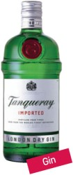
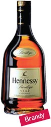

칵테일의 유래
칵테일이란?
: 여러 종류의 양주를 베이스로 하여 설탕, 향료 등을 혼합하여 만든 혼합주
셰계 각국의 술을 그대로 마시지 않고 마시는 사람의 기호와 취향에 맞추어 독특한 맛과 빛깔을
내는 것이 특징
칵테일의 유래
-칵테일이라는 명칭의 유래는 여러 설이 있으나, 1795년경 미국 루이지애나주 뉴올리언스에 이주해온 A.A.페이쇼라는 약사가 달걀 노른자를 넣은 음료를 조합해서 프랑스어로 '코크티에(coquetier)' 라고 부른 데서 비롯되었다.
-칵테일의 유행은 미국에서 시작되었다고 할 수 있으며, 그 후 미국에 금주령이 내렸을 때 바텐더들의 대다수가 실직하여 유럽에 건너가 여러 종류의 칵테일을 만듦으로써 유럽에도 유행하게 되었다. 제1차 세계대전 전에는 일부 특수층에서만 애음되다가 이 전쟁을 치르는 동안 주둔지 군인들이 칵테일을 요구하게 되면서 일반화되었다.
-칵테일이 한국에 들어온 것은 그 연대가 확실하지 않으나 한말 미국대사관이 개설된 이후라고 생각되며, 대중화된 것은 8 ·15광복 후로 보인다.
칵테일의 기주
더 많은 기주가 있지만 많이 사용하는 6가지를 선정하였다.
1.진(Gin)
: 곡물을 원료로 하여 증류한 술에, 주니퍼 베리를 주원료로 한 향료식품을 첨가하여 재증류한 술
ex) 고든스 진(Godon’s Gin), 탱거레이 진(Tanqueray Gin), 탱거레이 넘버 10(Tanqueray NO. 10),
비피터 진(Beefeater Gin), 봄베이 사파이어(Bombay Sapphire)

2.보드카(Vodka)
: 곡물에 맥아를 넣어 당화·발효시켜 증류한 후, 자작나무의 숯으로 여과하여 만든 술
알코올 도수 40~60%로 무색 투명하고 무미·무취한 술로, 칵테일용으로 널리 애용되고 있다.
ex) 스미노프(Smirnoff), 스톨리치나야(Stolichnaya), 앱솔루트(Absolut),
시락(Ciroc), 단즈카(Danzka), 케텔 원(Ketel One), 핀란디아(Finlandia), 벨베데레(Belvedere)

3.럼(Rum)
: 서인도제도가 원산지로, 사탕수수의 즙 또는 부산물(당밀)을 발효·증류·숙성시켜 만든 술
ex) 팜페로(Pampero), 바카디(Bacardi), 하바나 클럽(Havana Club)

4.테킬라(Tequila)
: 멕시코 특산의 다육식물인 용설란의 수액을 채취해 두면, 자연히 하얗고 걸쭉한 풀케(Pulque)라는 발효주가 된다. 이것을 증류하여 숙성한 것이 바로 테킬라
ex) 호세 쿠에르보 이스페셜(Jose Cuervo Especial), 쿠에르보 1800(Cuervo 1800), 사우자(Sauza)

5.브랜디(Brandy)
: 포도를 발효·증류한 술.
보다 넓은 의미로는 모든 과일류를 발효·증류하여 숙성시킨 술을 말한다.
ex) 포도를 발효시킨 브랜디로는 헤네시(Hennessy), 레미 마르탱(Remy Martin), 카뮈(Camus)
사과를 발효시킨 브랜디로는 칼바도스(Calvados)

6.위스키(Whiskey)
: 보리, 호밀, 밀, 옥수수, 귀리 등 곡류를 주원료로 당화하여 발효시킨 후, 증류 및 숙성의 과정을 거쳐 만들어진 술